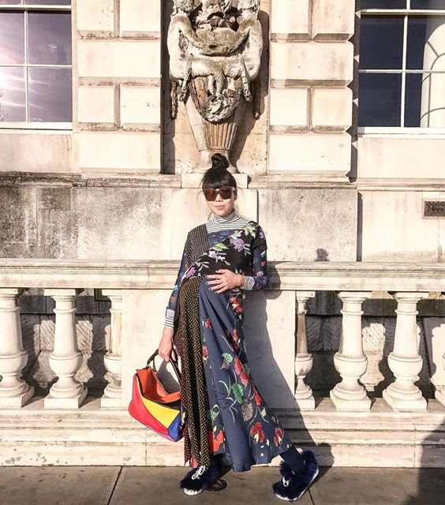

Fashion Tips

I hadn’t really intended to write any posts about dressing my pregnancy bump for two reasons – first that the internet is awash with advice, tips and recommendations on maternity attire and second that from the get-go, I had wanted to adjust or change as little as possible with regards to my wardrobe. There’s no nice way of putting it . Mainstream maternity wear by and large, sucks. It can generally be summed up with horizontal stripes, faux kimono wrap constructions and copious amounts of cotton jersey (scroll through #Bumpfie on Instagram and your eyes adjust to that linear striped pattern). In other words, clothes that I wasn’t prepared to spend actual money on.
Find out more